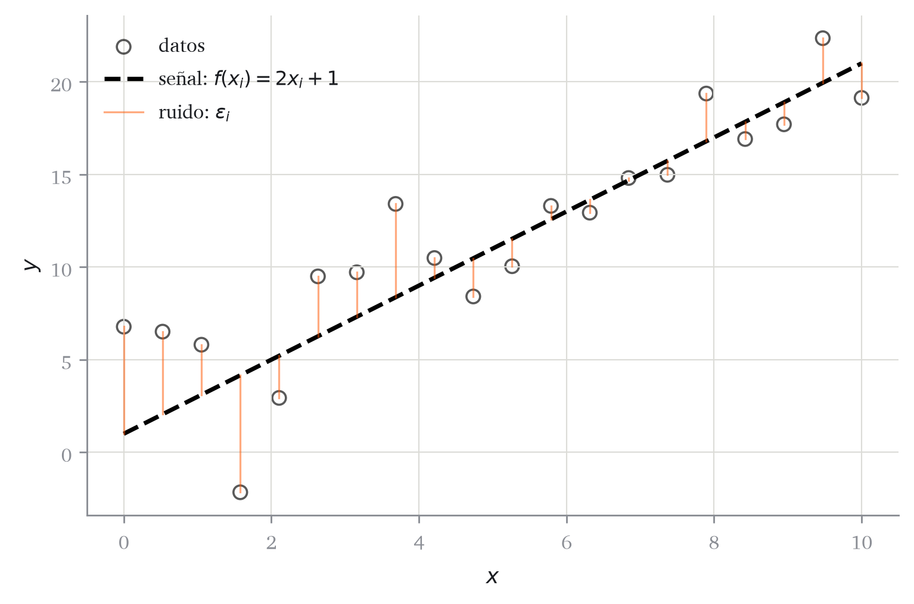
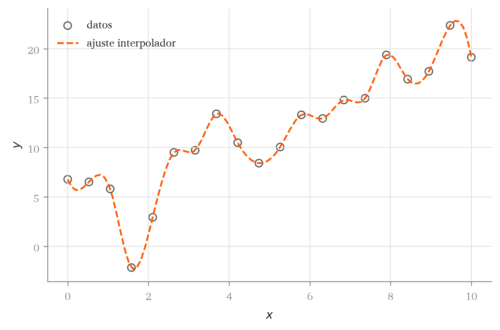
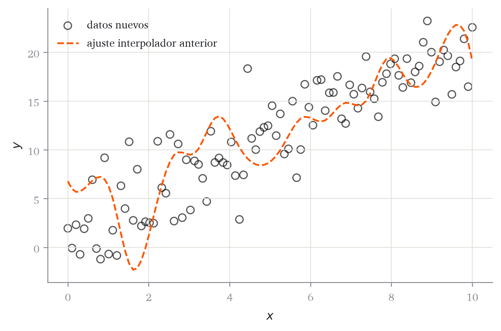
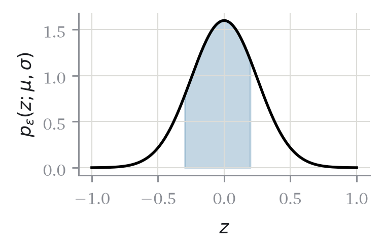
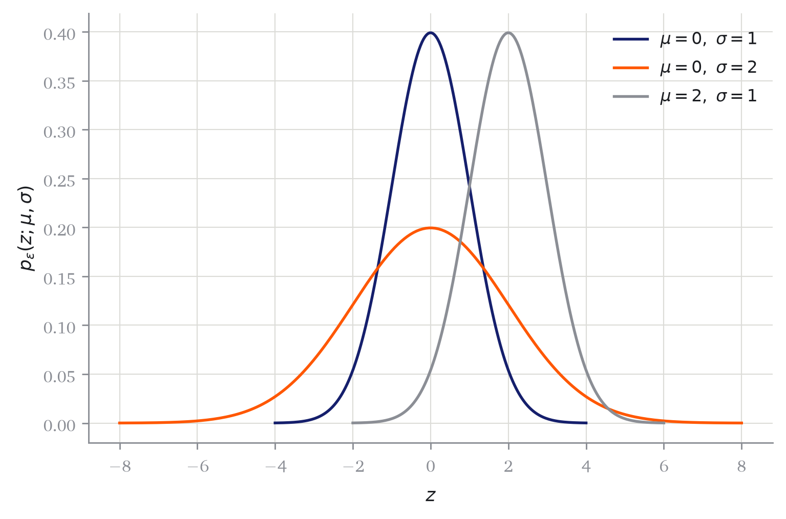
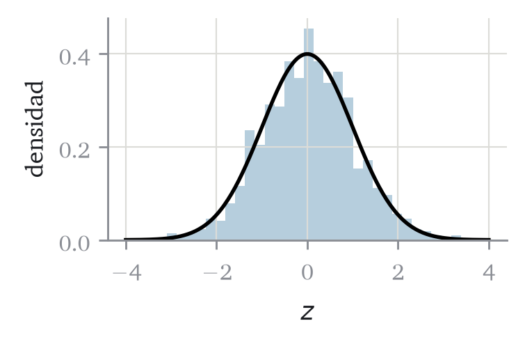
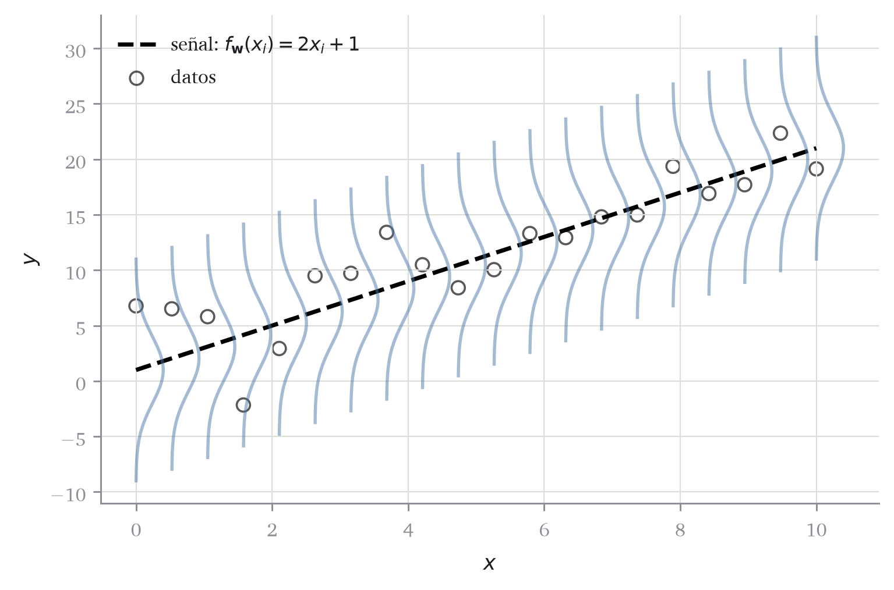
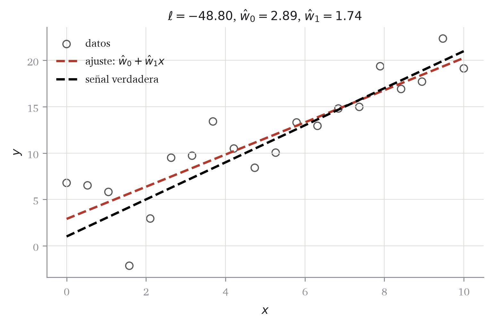

Código
import torch
from matplotlib import pyplot as plt
torch.manual_seed(42)
n = 20
x = torch.linspace(0, 10, n)
senal = 2 * x + 1
ruido = 3 * torch.randn(n)
y = senal + ruido
kw_puntos = dict(color="black", facecolors="none", s=40, alpha=0.65)Distribuciones generadoras para formular un problema de aprendizaje
Recordemos que, en el aprendizaje automático supervisado, partimos de un conjunto de datos observados
\[ \mathcal{D}=\{(\mathbf{x}_i,y_i)\}_{i=1}^{n}, \]
La tarea consiste en aprender una función \(f\) que, a partir de las características de un caso nuevo, produzca una predicción \(\widehat y=f(\mathbf{x})\) que se aproxime a su respuesta \(y\):
\[ \widehat y=f(\mathbf{x})\approx y. \]
El principal problema del aprendizaje supervisado es que la relación entre \(\mathbf{x}\) e \(y\) de los datos observados no suele ser exacta. Esta relación, puede entenderse como la composición de una relación estable “subyacente” y una variación aleatoria que oculta parcialmente esa relación. Esta variación se conoce como ruido y puede tener distintas procedencias: errores de medición, factores no observados, cambios en el entorno, etc. La relación estable se denomina señal. El objetivo del aprendizaje supervisado es aprender la señal sin memorizar el ruido.
Para entenderlo mejor, construyamos un conjunto de datos sencillo que contenga ambos componentes.
import torch
from matplotlib import pyplot as plt
torch.manual_seed(42)
n = 20
x = torch.linspace(0, 10, n)
senal = 2 * x + 1
ruido = 3 * torch.randn(n)
y = senal + ruido
kw_puntos = dict(color="black", facecolors="none", s=40, alpha=0.65)fig, ax = plt.subplots(figsize=(6, 4))
ax.scatter(x.numpy(), y.numpy(), **kw_puntos, label="datos")
ax.plot(x.numpy(), senal.numpy(), color="black", linestyle="--", lw=2,
label=r"señal: $f(x_i)=2x_i+1$")
for i in range(n):
etiqueta = r"ruido: $\varepsilon_i$" if i == 0 else None
ax.plot([x[i].item(), x[i].item()], [senal[i].item(), y[i].item()],
color="#ff5700", alpha=0.5,
linewidth=0.9, label=etiqueta)
ax.set(xlabel="$x$", ylabel="$y$")
ax.legend()
plt.tight_layout()
Podemos pensar que cada dato contiene una señal, expresada mediante una relación \(y\approx f(x)\), y un ruido que oculta parcialmente esa relación. Esquemáticamente,
\[ y_i=f(x_i)+\varepsilon_i. \tag{1.1}\]
La respuesta \(y_i\) es el valor que observamos. La función \(f\) describe el patrón estable que queremos aprender y \(\varepsilon_i\) recoge la variación particular de la observación \(i\).
Definición 1.1 (Problema de predicción supervisada) En un problema de predicción supervisada observamos
\[ \mathcal{D}=\{(\mathbf{x}_i,y_i)\}_{i=1}^{n}, \qquad \mathbf{x}_i\in\mathbb{R}^{p},\quad y_i\in\mathbb{R}, \]
y construimos una función \(\hat{f}\) que produzca predicciones \(\hat{y}=\hat{f}(\mathbf{x})\) para observaciones nuevas. Aprender no consiste en recordar los valores \(y_i\), sino en aproximar la señal \(f\) que los genera.
Es importante señalar que el objetivo no es aprender individualmente cada \(y_i\) sino la función subyacente \(f(\mathbf{x})\). Para ilustrar este punto, supongamos que ajustemos una función que pase exactamente por todos los puntos. Esta operación se denomina interpolación.
Teorema 1.1 (Interpolación exacta) Sean \(x_1,\ldots,x_{n}\) valores distintos dos a dos. Para cualesquiera respuestas \(y_1,\ldots,y_{n}\) existe un polinomio \(P\) de grado a lo sumo \(n-1\) tal que \(P(x_i)=y_i\) para todo \(i\).
El resultado se demuestra construyendo el polinomio explícitamente, y es el ejercicio del bloque B de la hoja 1. Lo que importa aquí es la consecuencia: el enunciado vale para cualesquiera \(y_i\), incluidos unos generados por ruido puro. Un error de entrenamiento nulo se puede conseguir siempre y, por tanto, no distingue un modelo que ha aprendido de uno que no.
from scipy import interpolate
interpolador = interpolate.interp1d(x.numpy(), y.numpy(), kind="cubic")
x_denso = torch.linspace(0, 10, 100)
y_interpolada = interpolador(x_denso.numpy())fig, ax = plt.subplots(figsize=(6, 4))
ax.scatter(x.numpy(), y.numpy(), **kw_puntos, label="datos")
ax.plot(x_denso.numpy(), y_interpolada, color="#ff5700", linestyle="--",
label="ajuste interpolador")
ax.set(xlabel="$x$", ylabel="$y$")
ax.legend()
plt.tight_layout()
El problema aquí es que, mientras hemos ajustado perfectamente nuestros datos de entrenamiento, el modelo no ha aprendido la señal subyacente \(f\). Si generamos nuevas observaciones con la misma señal pero con un ruido distinto, veremos que la función interpoladora no predice bien los nuevos datos.
y_nueva = 2 * x_denso + 1 + 3 * torch.randn(len(x_denso))fig, ax = plt.subplots(figsize=(6, 4))
ax.scatter(x_denso.numpy(), y_nueva.numpy(), **kw_puntos,
label="datos nuevos")
ax.plot(x_denso.numpy(), y_interpolada, color="#ff5700", linestyle="--",
label="ajuste interpolador anterior")
ax.set(xlabel="$x$", ylabel="$y$")
ax.legend()
plt.tight_layout()
Las curvas innecesarias del interpolador no corresponden a ningún patrón de los datos nuevos. Al intentar ajustar el ruido de entrenamiento, hemos dejado de aprender la señal.
Definición 1.2 (Sobreajuste) Hay sobreajuste (overfitting) cuando un modelo reproduce bien las observaciones con las que se ha ajustado y predice mal observaciones nuevas del mismo proceso, porque ha aprendido parte del ruido de la muestra en lugar de solo la señal.
Es uno de los problemas centrales del aprendizaje supervisado y reaparecerá en todo el curso. Obsérvese que la definición compara dos cosas, el ajuste sobre los datos usados y el error sobre datos nuevos, y que la segunda no se puede medir con los datos de entrenamiento. Construir esa medida es el objeto del capítulo dedicado a evaluación.
Para aprender la señal de Ecuación 1.1 necesitamos poder hablar matemáticamente del ruido. Vamos a asumir que \(\varepsilon_1,\ldots,\varepsilon_n\) son variables aleatorias independientes e idénticamente distribuidas de cierta distribución. Esto significa que asumimos que cada nueva observación incorpora una extracción distinta de la misma distribución, sin que el ruido de una observación influya en el de las demás.
La distribución de ruido que utilizaremos primero es la distribución normal o gaussiana.

Definición 1.3 (Distribución normal) Una variable aleatoria \(\varepsilon\) sigue una distribución normal con media \(\mu\) y desviación típica \(\sigma\) si
\[ \mathbb{P}\!\left( a\leq\varepsilon\leq b \right) =\int_a^b p(z;\mu,\sigma)\,\mathrm{d}z, \]
donde
\[ p(z;\mu,\sigma) =\frac{1}{\sigma\sqrt{2\pi}} \exp\left(-\frac{(z-\mu)^2}{2\sigma^2}\right). \tag{1.2}\]
Escribimos \(\varepsilon\sim\mathcal{N}(\mu,\sigma^2)\). La función \(p\) es su densidad de probabilidad.
Como habéis visto en probabilidad, una densidad no es una probabilidad puntual. En una variable continua, las probabilidades se obtienen integrando la densidad sobre intervalos.
Ejercicio 1.1 (Una densidad puede pasar de uno)
La fórmula anterior se puede traducir directamente a código vectorizado.
def densidad_normal(z, media, desviacion):
constante = desviacion * (2 * torch.pi) ** 0.5
return torch.exp(-0.5 * ((z - media) / desviacion) ** 2) / constante
z = torch.tensor([0.0, 1.0, 2.0])
densidad_normal(z, media=0.0, desviacion=1.0)tensor([0.3989, 0.2420, 0.0540])Los dos parámetros controlan la forma de la distribución: \(\mu\) determina su centro y \(\sigma\) su dispersión.
fig, ax = plt.subplots(figsize=(6, 4))
for media, desviacion in [(0, 1), (0, 2), (2, 1)]:
soporte = torch.linspace(media - 4 * desviacion,
media + 4 * desviacion, 200)
densidad = densidad_normal(soporte, media, desviacion)
ax.plot(
soporte.numpy(),
densidad.numpy(),
label=fr"$\mu={media},\ \sigma={desviacion}$",
)
ax.set(xlabel="$z$", ylabel=r"$p_\varepsilon(z;\mu,\sigma)$")
ax.legend()
plt.tight_layout()
Podemos generar ruido normal con torch.normal. Al repetir muchas veces la extracción, el histograma de los valores se aproxima a la densidad de la distribución.
media = 0.0
desviacion = 1.0
muestra_ruido = torch.normal(media, desviacion, size=(10,))
torch.round(muestra_ruido, decimals=3)tensor([-1.3300, -0.5430, 0.5470, 0.6430, -0.7900, -0.9060, -0.2610, -0.5470,
2.1170, -1.7120])
La distribución normal tiene varias propiedades especialmente útiles para modelizar el ruido. Las demostraciones completas se encuentran en el repaso de probabilidad.
Teorema 1.2 (Traslación) Sea \(\varepsilon\) una variable normal con media \(\mu\) y desviación típica \(\sigma\). Para cualquier constante \(c\),
\[ \varepsilon+c\sim\mathcal{N}(\mu+c,\sigma^2). \]
Por tanto, sumar una constante desplaza el centro de la distribución, pero no cambia su desviación típica.
Teorema 1.3 (Escala) Sea \(\varepsilon\) una variable normal con media \(\mu\) y desviación típica \(\sigma\). Para cualquier constante \(a\neq0\),
\[ a\varepsilon\sim\mathcal{N}(a\mu,a^2\sigma^2). \]
Por tanto, multiplicar una variable normal por \(a\) multiplica su media por \(a\) y su desviación típica por \(\left\lvert a \right\rvert\).
Para cualquier variable continua con densidad \(p\) se definen la esperanza y la varianza mediante
\[ \mathbb{E}\!\left[ \varepsilon \right]=\int_{-\infty}^{\infty} z\,p(z)\,\mathrm{d}z, \qquad \mathrm{Var}\!\left( \varepsilon \right) =\int_{-\infty}^{\infty} \bigl(z-\mathbb{E}\!\left[ \varepsilon \right]\bigr)^2p(z)\,\mathrm{d}z. \]
La varianza mide la distancia cuadrática media respecto al centro.
Teorema 1.4 (Media y varianza de una variable normal) Si \(\varepsilon\sim\mathcal{N}(\mu,\sigma^2)\), entonces:
\[ \mathbb{E}\!\left[ \varepsilon \right]=\mu, \qquad \mathrm{Var}\!\left( \varepsilon \right)=\sigma^2. \]
Las demostraciones de Teorema 1.2, Teorema 1.3 y Teorema 1.4 se desarrollan en el repaso de probabilidad.
La distribución \(\mathcal{N}(0,1)\) se denomina normal estándar. Si \(Z\sim\mathcal{N}(0,1)\), las propiedades de escala y traslación permiten construir cualquier otra distribución normal a partir de \(Z\). En concreto, definimos
\[ X=\sigma Z+\mu. \]
Por Teorema 1.3 y Teorema 1.2, \(X\sim\mathcal{N}(\mu,\sigma^2)\). También podemos comprobar sus momentos directamente. Para la media,
\[ \mathbb{E}\!\left[ X \right]=\mathbb{E}\!\left[ \sigma Z+\mu \right]=\sigma\mathbb{E}\!\left[ Z \right]+\mu=\mu. \]
Para la varianza,
\[ \mathrm{Var}\!\left( X \right) =\mathrm{Var}\!\left( \sigma Z+\mu \right) =\sigma^2\mathrm{Var}\!\left( Z \right) =\sigma^2. \]
Hemos utilizado que \(\mathbb{E}\!\left[ Z \right]=0\), \(\mathrm{Var}\!\left( Z \right)=1\), que sumar una constante no altera la varianza y que \(\mathrm{Var}\!\left( aZ \right)=a^2\mathrm{Var}\!\left( Z \right)\).
La misma construcción aparece en código: se genera primero ruido estándar y después se escala y se traslada.
media = 3.0
desviacion = 2.0
n_muestras = 5
ruido_transformado = desviacion * torch.randn(n_muestras) + media
ruido_directo = torch.normal(media, desviacion, size=(n_muestras,))Volvamos ahora al modelo señal + ruido:
\[ y_i=f(x_i)+\varepsilon_i. \]
Si suponemos que los errores son independientes y \(\varepsilon_i\sim\mathcal{N}(0,\sigma^2)\), la propiedad de traslación implica que
\[ y_i\,\vert\,x_i\sim\mathcal{N}\bigl(f(x_i),\sigma^2\bigr). \tag{1.3}\]
Cada respuesta se modeliza así como una extracción de una distribución normal centrada en la señal. El nivel \(\sigma\) determina cuánto suelen alejarse los datos de ella.
Definición 1.4 (Modelo gaussiano) El modelo
\[ y_i=f(x_i)+\varepsilon_i, \qquad \varepsilon_i\overset{\mathrm{iid}}{\sim}\mathcal{N}(0,\sigma^2), \]
se denomina modelo generador gaussiano.
Hasta ahora hemos utilizado la señal \(f(x)=2x+1\). En un problema real \(f\) es desconocida y debemos decidir en qué familia de funciones vamos a buscarla.
Definición 1.5 (Clase de hipótesis y parámetros) Una clase de hipótesis \(\mathcal{F}\) es el conjunto de funciones permitidas para representar la señal. Si las funciones están indexadas por parámetros \(\boldsymbol{w}\), escribimos \(f(\mathbf{x};\boldsymbol{w})\).
El primer caso será la familia de funciones afines.
Definición 1.6 (Modelo lineal-gaussiano) En una dimensión, un modelo gaussiano cuya señal es
\[ f_{\boldsymbol{w}}(x_i)=w_0+w_1 x_i, \qquad \boldsymbol{w}=(w_0,w_1)^{\mathsf{T}}, \tag{1.4}\]
se denomina modelo lineal-gaussiano. Con varios predictores se escribe
\[ y_i\,\vert\,\mathbf{x}_i \sim\mathcal{N}\bigl(f(\mathbf{x}_i;\boldsymbol{w}),\sigma^2\bigr), \qquad f(\mathbf{x}_i;\boldsymbol{w}) =w_0+\sum_{j=1}^{p}w_jx_{ij}. \]
def dibuja_normal_vertical(ax, x0, media, sigma, ancho=0.4):
soporte = torch.linspace(-10, 10, 300)
perfil = torch.exp(-(soporte ** 2) / (2 * sigma ** 2))
perfil = ancho * perfil / perfil.max()
ax.plot(
(x0 + perfil).numpy(),
(media + soporte).numpy(),
color="#4c78a8",
alpha=0.5,
)
fig, ax = plt.subplots(figsize=(6, 4))
ax.plot(x.numpy(), senal.numpy(), color="black", linestyle="--", lw=2,
label=r"señal: $f_{\mathbf{w}}(x_i)=2x_i+1$")
for x0 in x:
dibuja_normal_vertical(ax, x0, 2 * x0 + 1, sigma=3)
ax.scatter(x.numpy(), y.numpy(), **kw_puntos, label="datos")
ax.set(xlabel="$x$", ylabel="$y$")
ax.legend()
plt.tight_layout()
Un valor grande de \(\sigma\) produce observaciones más alejadas de la señal y hace más difícil distinguirla. Un valor pequeño concentra las respuestas cerca de ella.
Una de las razones principales para definir modelos es que nos proporcionan formas fundamentadas de pensar en lo que nuestros modelos deben aprender (la señal) y lo que deben ignorar (el ruido). Estos modelos también son muy útiles como modelos de dónde provienen los datos; es decir, como distribuciones generadoras de datos.
Definición 1.7 (Distribución generadora de datos) Una distribución generadora de datos, también llamada modelo generador, es un modelo probabilístico que describe cómo se producen las observaciones mediante variables aleatorias y sus distribuciones. En regresión especifica, como mínimo, la distribución de \(Y\,\vert\,X=\mathbf{x}\).
El modelo lineal-gaussiano es un ejemplo sencillo. Para simular una respuesta, primero se calcula \(f_{\boldsymbol{w}}(x_i)\), después se extrae \(\varepsilon_i\sim\mathcal{N}(0,\sigma^2)\) y finalmente se suman ambas cantidades.
Conviene separar desde ahora dos cosas que es fácil confundir.
Proponer una familia es formular una hipótesis sobre \(P^\star\), y una hipótesis puede ser falsa. Que la señal real sea curva, o que el ruido tenga colas más pesadas que la normal, no impide ajustar el modelo; lo que hace es limitar hasta dónde puede llegar el mejor miembro de la familia. En el capítulo siguiente veremos qué consecuencias tiene eso exactamente.
Una característica muy útil de los modelos generadores de datos es que también nos brindan herramientas para medir cómo de bien se ajusta nuestra señal aprendida a los datos observados, a través del concepto de verosimilitud.
Bajo el modelo gaussiano, la densidad de una observación es
\[ p\bigl(y_i;f_{\boldsymbol{w}}(x_i),\sigma\bigr) =\frac{1}{\sigma\sqrt{2\pi}} \exp\left( -\frac{\bigl(y_i-f_{\boldsymbol{w}}(x_i)\bigr)^2}{2\sigma^2} \right). \]
Como las observaciones son independientes, la densidad conjunta es el producto de las densidades individuales evaluadas en los valores observados.
Definición 1.8 (Verosimilitud) La verosimilitud de los datos bajo el modelo lineal-gaussiano es
\[ L(\boldsymbol{w},\sigma) =\prod_{i=1}^{n} p\bigl(y_i;f_{\boldsymbol{w}}(x_i),\sigma\bigr). \]
Cada factor mide la densidad que el modelo asigna a una observación. Bajo la independencia asumida, el producto es la densidad conjunta de toda la muestra. Por ello, comparar verosimilitudes permite comparar qué parámetros hacen más compatibles los datos observados con el modelo: preferiremos aquellos que asignan mayor densidad conjunta a lo que realmente hemos observado.
Para ajustar la señal elegiremos los parámetros que hacen más compatibles los datos observados con el modelo generador. En el modelo gaussiano, desplazar \(f_{\boldsymbol{w}}(x_i)\) lejos de \(y_i\) reduce la densidad asignada a esa observación. Por tanto, maximizar la verosimilitud favorece una señal alrededor de la cual el modelo pueda explicar conjuntamente las respuestas observadas.
Este criterio también posee buenas propiedades teóricas. Si el modelo está correctamente especificado, la señal verdadera pertenece a la clase de hipótesis, los parámetros son identificables y se cumplen ciertas condiciones regulares, el estimador de máxima verosimilitud es consistente: al crecer la muestra se aproxima al parámetro que generó los datos. Bajo esas mismas condiciones, su distribución para muestras grandes es aproximadamente normal y aprovecha eficientemente la información disponible. Estas propiedades dependen de los supuestos del modelo; no los validan por sí mismas.
Definición 1.9 (Estimación de máxima verosimilitud) Un estimador de máxima verosimilitud es cualquier solución de
\[ (\hat{\boldsymbol{w}},\hat{\sigma}) \in\mathop{\mathrm{arg\,max}}_{\boldsymbol{w},\sigma>0}L(\boldsymbol{w},\sigma). \]
Si \(\sigma\) se considera conocido, la optimización se realiza únicamente respecto a \(\boldsymbol{w}\).
El producto de muchas densidades puede producir números extremadamente pequeños, y esto no es una molestia teórica: un ordenador deja de distinguirlos de cero.
Ejercicio 1.2 (Por qué se toman logaritmos) Con los datos simulados de este capítulo y \(\sigma=3\), evalúa densidad_normal(y, senal, 3.0) para obtener las \(n\) densidades individuales.
Para evitar este problema se utiliza la log-verosimilitud,
\[ \ell(\boldsymbol{w},\sigma) =\log L(\boldsymbol{w},\sigma) =\sum_{i=1}^{n} \log p\bigl(y_i;f_{\boldsymbol{w}}(x_i),\sigma\bigr), \tag{1.5}\]
que convierte productos en sumas y resulta más estable numéricamente.
Lema 1.1 (El logaritmo preserva el máximo) Como el logaritmo es estrictamente creciente,
\[ \mathop{\mathrm{arg\,max}}_{\boldsymbol{w},\sigma>0}L(\boldsymbol{w},\sigma) =\mathop{\mathrm{arg\,max}}_{\boldsymbol{w},\sigma>0}\ell(\boldsymbol{w},\sigma) =\mathop{\mathrm{arg\,min}}_{\boldsymbol{w},\sigma>0}\bigl[-\ell(\boldsymbol{w},\sigma)\bigr]. \]
Demostración. Sea \(\vartheta=(\boldsymbol{w},\sigma)\) y sea \(\Theta=\mathbb{R}^{p+1}\times(0,\infty)\) el espacio de parámetros. Para cualquier \(\vartheta^\star\in\Theta\),
\[ \begin{aligned} \vartheta^\star\in\mathop{\mathrm{arg\,max}}_{\vartheta\in\Theta}L(\vartheta) &\iff L(\vartheta)\leq L(\vartheta^\star) \quad\text{para todo }\vartheta\in\Theta \\ &\iff \log L(\vartheta)\leq\log L(\vartheta^\star) \quad\text{para todo }\vartheta\in\Theta \\ &\iff \vartheta^\star\in\mathop{\mathrm{arg\,max}}_{\vartheta\in\Theta}\ell(\vartheta). \end{aligned} \]
La segunda equivalencia se debe a que \(L(\vartheta)>0\) y el logaritmo es estrictamente creciente. Finalmente,
\[ \ell(\vartheta)\leq\ell(\vartheta^\star) \iff -\ell(\vartheta^\star)\leq-\ell(\vartheta), \]
de modo que maximizar \(\ell\) equivale a minimizar \(-\ell\).
En este primer experimento no estimaremos \(\sigma\): fijaremos sigma_supuesto = 3.0, el nivel de ruido utilizado para simular los datos, y buscaremos únicamente los parámetros \(\boldsymbol{w}=(w_0,w_1)^{\mathsf{T}}\) de la señal. Esta simplificación permite aislar el problema de aprender \(f_{\boldsymbol{w}}\); el capítulo siguiente mostrará cómo estimar también \(\sigma\).
Para esta búsqueda evaluamos directamente Ecuación 1.5 mediante densidad_normal. Calculamos su valor sobre una rejilla de posibles interceptos y pendientes y conservamos la mejor combinación.
1sigma_supuesto = 3.0
mejor_loglik = -float("inf")
mejores_coeficientes = None
for w0 in torch.linspace(-5, 5, 20):
for w1 in torch.linspace(-1, 3, 20):
2 prediccion = w0 + w1 * x
loglik_actual = torch.log(
densidad_normal(y, prediccion, sigma_supuesto)
3 ).sum().item()
4 if loglik_actual > mejor_loglik:
mejor_loglik = loglik_actual
mejores_coeficientes = (w0.item(), w1.item())w0_hat, w1_hat = mejores_coeficientes
fig, ax = plt.subplots(figsize=(6, 4))
ax.scatter(x.numpy(), y.numpy(), **kw_puntos, label="datos")
ax.plot(
x.numpy(),
(w0_hat + w1_hat * x).numpy(),
color="#b33b2e",
linestyle="--",
lw=2,
label=r"ajuste: $\hat w_0+\hat w_1x$",
)
ax.plot(
x.numpy(), senal.numpy(), color="black", linestyle="--", lw=2,
label="señal verdadera",
)
ax.set(
xlabel="$x$",
ylabel="$y$",
title=(fr"$\ell={mejor_loglik:.2f}$, $\hat w_0={w0_hat:.2f}$, "
fr"$\hat w_1={w1_hat:.2f}$"),
)
ax.legend()
plt.tight_layout()
Ejercicio 1.3 (La resolución de la rejilla) La búsqueda ha recorrido torch.linspace(-5, 5, 20) para el intercepto y torch.linspace(-1, 3, 20) para la pendiente.
La señal aprendida se aproxima a la señal generadora. La búsqueda por rejilla permite ver qué significa maximizar la verosimilitud, pero deja de ser viable en cuanto aumenta el número de parámetros. A continuación desarrollaremos métodos sistemáticos para resolver este problema de aprendizaje.
© Roi Naveiro, CUNEF Universidad, 2026